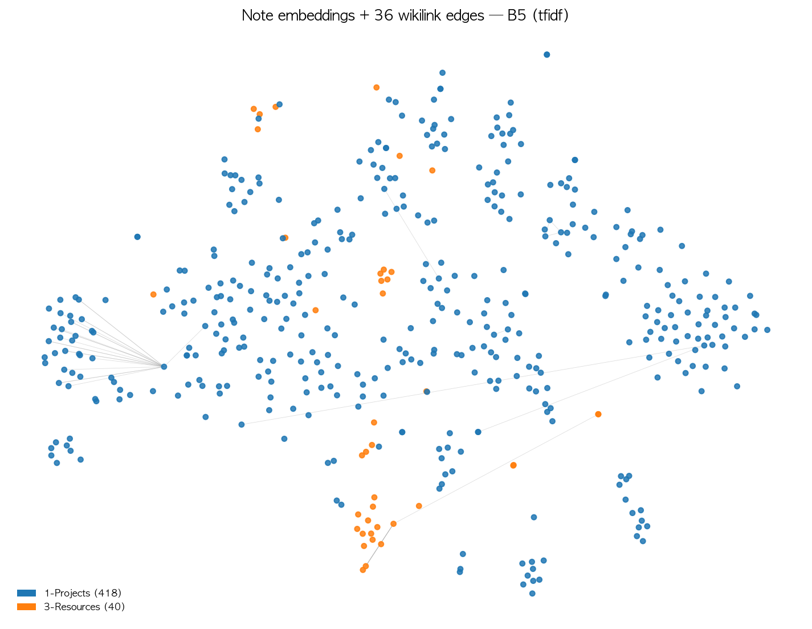

Personal wiki embedding from multi-signal CBOW — retrieving my own notes with my own model.
Problem. Generic LLMs don't know my personal vocabulary. I want a small embedding trained on my Obsidian vault that retrieves my own notes.
Approach. Extend HW2 CBOW with two graph signals from vault structure:
Three sources of co-occurrence under one negative-sampling loss + a separate retrieval head (mean / TF-IDF). Compared against 7 baselines on 20 hand-curated queries.
Training (left): Vault → 3 pair sources → λ-mixed batches → PyTorch CBOW with NS loss → learned W₁. Retrieval (right): query and notes both pooled via mean or TF-IDF → cosine top-k. 두 phase 가 학습된 W₁ 임베딩 하나를 공유합니다.
Beyond the standard sliding-window inside one note, each vault note carries two graph signals:
| Source | Edge | Pairs |
|---|---|---|
| intra-note | sliding window | standard CBOW |
| wikilink | [[link]] between notes | $(w_a \in n_A,\ w_b \in n_B)$ |
| category | shared folder / #tag | $(w_a \in n_A,\ w_b \in n_B)$ |
Notes that link or co-categorize should share embedding neighborhoods. We mix the three signals into one loss.
Wiki/cat pairs have single-word context → reuse the same CBOW forward path. No new layers.
For each $(\text{ctx}, w)$ with $K_{\text{neg}}=5$ negatives $\{w_k\}\sim P_n$:
Mikolov 2013 식 그대로 — alias-method $O(1)$ 샘플링, 구현만 직접.
Retrieval head is separate from training. Pre-compute one vector per note, top-k by cosine.
| ID | Pairs | Pooling | Model |
|---|---|---|---|
| B0 | — | sparse | sklearn TF-IDF only |
| B1 | intra | mean | Plain CBOW |
| B2 | intra | tfidf | Plain CBOW + TFIDF |
| B3 | intra + wiki | mean | + wiki only |
| B4 | intra + cat | mean | + cat only |
| B5 | intra + wiki + cat | mean | WikiCBOW full |
| B6 ★ | intra + wiki + cat | tfidf | WikiCBOW full + TFIDF |
| ID | Model | P@1 | P@3 | R@5 | MRR |
|---|---|---|---|---|---|
| B0 | TF-IDF only | 0.40 | 0.27 | 0.43 | 0.53 |
| B1 | Plain CBOW (mean) | 0.45 | 0.25 | 0.60 | 0.59 |
| B2 | Plain CBOW + TFIDF | 0.50 | 0.37 | 0.63 | 0.66 |
| B3 | + wiki only | 0.45 | 0.22 | 0.45 | 0.54 |
| B4 | + cat only | 0.50 | 0.35 | 0.58 | 0.64 |
| B5 | full (mean) | 0.85 | 0.57 | 0.90 | 0.90 |
| B6 | full + TFIDF ★ | 1.00 | 0.67 | 1.00 | 1.00 |
Observations. +wiki alone (B3) helps little — only 180 pairs from 36 resolved wikilinks. +cat alone (B4) adds 0.05. Combining all three (B5) jumps to 0.85. TF-IDF pooling on top (B6) closes the gap.

458 note embeddings (B5, TF-IDF pooling). 36 resolved wikilink edges overlaid. Orange = 3-Resources/Guides cluster forms cleanly in the lower-right; blue = 1-Projects spreads into project sub-clusters. The graph signals are visibly recovering the folder structure.
eval/REFINE_GUIDE.md.LLM_USAGE_LOG.md.